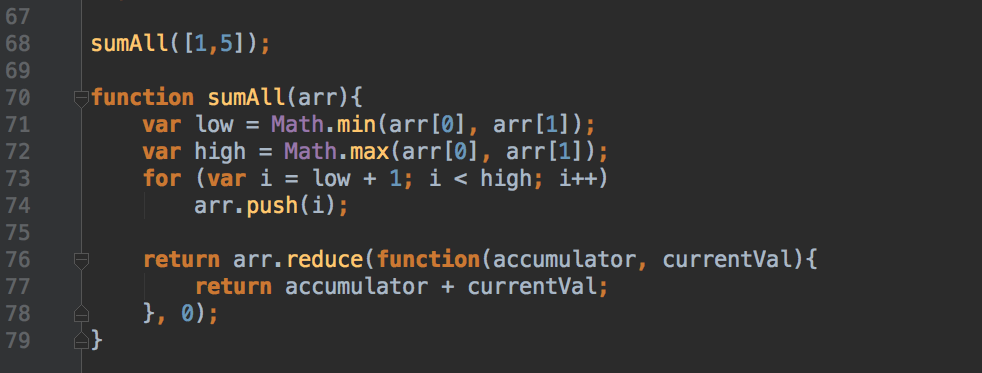

My core-javascript adventures!
Sum all numbers in a range
Objective: Take two numbers in an array and get the sum of those numbers as well as all numbers in between.
Explanation:
We use Math.min() and Math.max() to get the lowest and highest numbers in the array (in case they are out of order).
We then use a for loop to loop through and push the numbers between min and max into the array.
We use reduce() to get the sum of all the numbers in the array.

Get the difference between two arrays
Objective: Take two arrays of numbers and return all numbers that occur in one, but not two, of the arrays.
Explanation:
We use filter() and indexOf() to find each of the numbers that appear in one array but not the other.
We then use concat() to join the two arrays resulting from the filter().